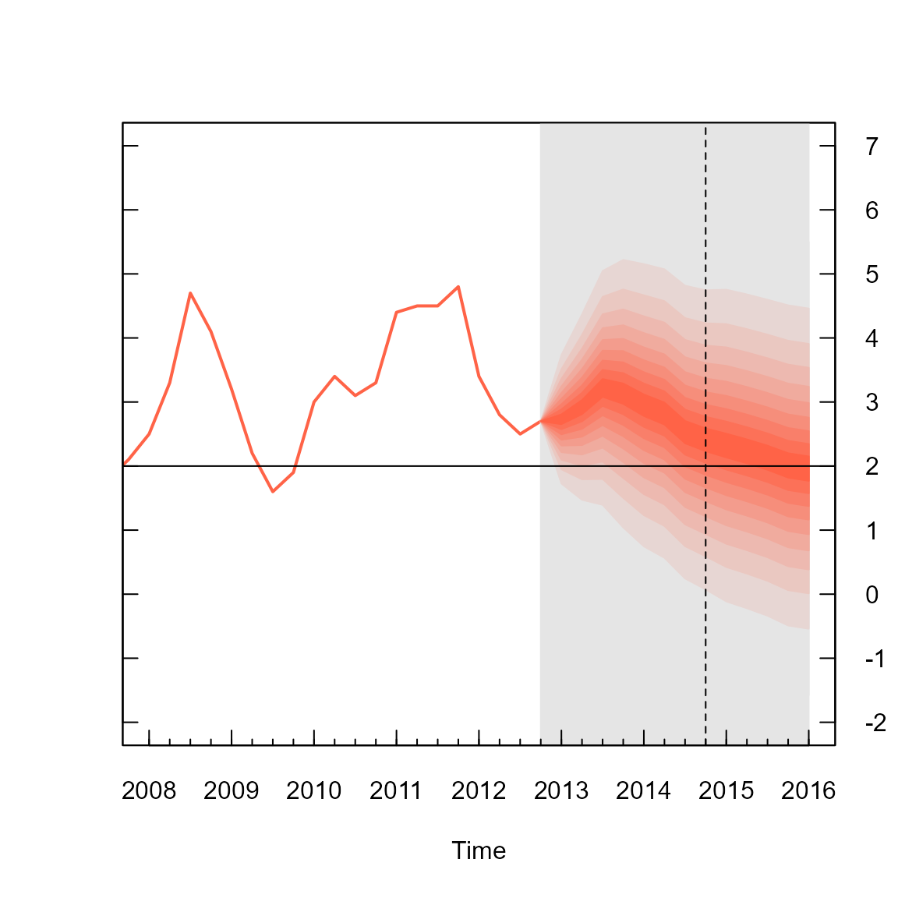
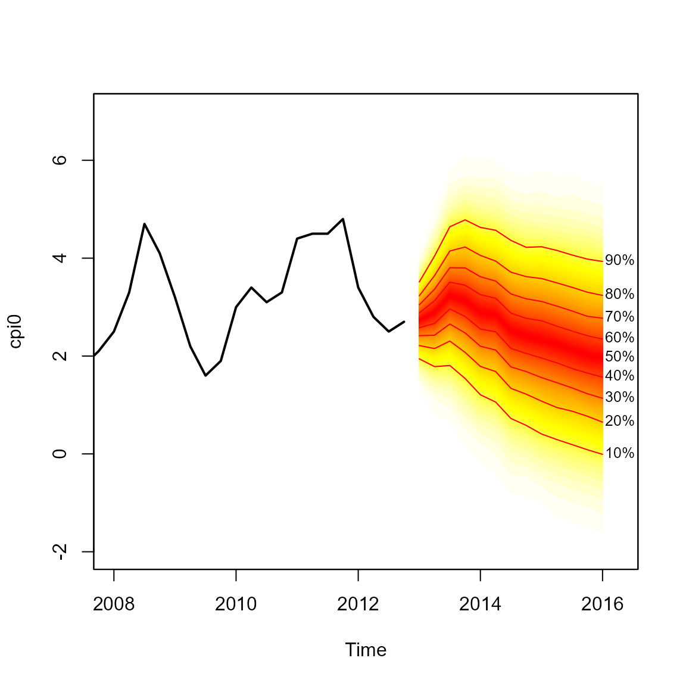

The Bank of England were one of the earliest pioneers of using fan charts to illustrate uncertainty in their forecasts, similar to this one:

As far as I can tell these charts were made in Excel, although (appropriately) I am not completely certain. There are also MATLAB scripts to create fan charts.
The fanplot package can also replicate Bank of England fan charts in R….
Split Normal (Two-Piece) Normal Distribution.
The Bank of England produce fan charts of forecasts for CPI and GDP in their quarterly Inflation Reports. They also provide data, in the form of mode, uncertainty and a skewness parameters of a split-normal distribution that underlie their fan charts (The Bank of England predominately refer to the equivalent, re-parametrised, two-piece normal distribution). The probability density of the split-normal distribution is given by Julio (2007) as
\[f(x; \mu, \sigma_1, \sigma_2) = \left\{\begin{array}{ll}\frac{\sqrt 2}{\sqrt\pi (\sigma_1+\sigma_2)} e^{-\frac{1}{2\sigma_1^2}(x-\mu)^2} \quad \mbox{for } -\infty < x \leq \mu \\\frac{\sqrt 2}{\sqrt\pi (\sigma_1+\sigma_2)} e^{-\frac{1}{2\sigma_2^2}(x-\mu)^2} \quad \mbox{for } \mu < x < \infty \\\end{array},\right.\]
where \(\mu\) represents the mode
parameter, and the two standard deviations \(\sigma_1\) and \(\sigma_2\) can be derived given the overall
uncertainty parameter, \(\sigma\) and
skewness parameters, \(\gamma\), as;
\(\sigma^2=\sigma^2_1(1+\gamma)=\sigma^2_2(1-\gamma).\)
The fanplot package contains functions for the density, distribution and
quantile of a split normal distribution (dsplitnorm,
psplitnorm and qsplitnorm) and a random
generator function rsplitnorm
Fan Chart Plots for CPI.
In order to reproduce the Bank of England plots there are two data
sets in the fanplot package. The cpi object is a time
series data frame with past values of CPI index. The boe
object is a data frame with historical details on the split normal
parameters for CPI inflation between Q1 2004 to Q4 2013 forecasts
published by the Bank of England.
## time0 time mode uncertainty skew
## 1 2004 2004.00 1.34 0.2249 0
## 2 2004 2004.25 1.60 0.3149 0
## 3 2004 2004.50 1.60 0.3824 0
## 4 2004 2004.75 1.71 0.4274 0
## 5 2004 2005.00 1.77 0.4499 0
## 6 2004 2005.25 1.68 0.4761 0The first column time0 refers to the base year of
forecast, the second, time indexes future projections,
whilst the remaining three columns provide values for the corresponding
projected mode (\(\mu\)), uncertainty
(\(\sigma\)) and skew (\(\gamma\)) parameters: Users can replicate
past Bank of England fan charts for a particular period after creating a
matrix object that contains values on the split-normal quantile function
for a set of user defined probabilities. For example, in the code below,
a subset of the Bank of England future parameters of CPI published in Q1
2013 are first selected. Then a vector of probabilities related to the
percentiles, that we ultimately would like to plot different shaded fans
for, are created. Finally, in a for loop the
qsplitnorm function, calculates the values for which the
time-specific (i) split-normal distribution will be less
than or equal to the probabilities of p.
# select relevant data
y0 <- 2013
boe0 <- subset(boe, time0==y0)
k <- nrow(boe0)
# guess work to set percentiles the BOE are plotting
p <- seq(0.05, 0.95, 0.05)
p <- c(0.01, p, 0.99)
# quantiles of split-normal distribution for each probability
# (row) at each future time point (column)
cpival <- matrix(NA, nrow = length(p), ncol = k)
for (i in 1:k)
cpival[, i] <- qsplitnorm(p, mode = boe0$mode[i], sd = boe0$uncertainty[i], skew = boe0$skew[i])The new object cpival contains the values evaluated from
the qsplitnormfunction in 6 rows and 13 columns, where rows
represent the probabilities used in the calculation p and
columns represent successive time periods.
cpival[1:5, 1:5]## [,1] [,2] [,3] [,4] [,5]
## [1,] 1.310928 0.8728139 0.6377539 0.1755382 -0.1673062
## [2,] 1.726639 1.4725288 1.3942125 1.0410359 0.7458961
## [3,] 1.948254 1.7922346 1.7974778 1.5024295 1.2327209
## [4,] 2.097776 2.0079386 2.0695589 1.8137296 1.5611793
## [5,] 2.216611 2.1793733 2.2858004 2.0611410 1.8222275The object cpival can be used to add a fan chart to the
active R graphic device. In the code below, the area of the plot is set
up when plotting the past CPI data, contained in the time series object
cpi. The xlim arguments are set to ensure
space on the right hand side of the plotting area for the fan. Following
the Bank of England style for plotting fan charts, the background for
future values is set to a gray colour, y-axis are plotted on the right
hand side, a horizontal line are added for the CPI target and a vertical
line for the two-year ahead point.
# past data
plot(cpi, type = "l", col = "tomato", lwd = 2,
xlim = c(y0 - 5, y0 + 3), ylim = c(-2, 7),
xaxt = "n", yaxt = "n", ylab="")
# background
rect(y0 - 0.25, par("usr")[3] - 1, y0 + 3, par("usr")[4] + 1, border = "gray90", col = "gray90")
# add fan
fan(data = cpival, data.type = "values", probs = p,
start = y0, frequency = 4,
anchor = cpi[time(cpi) == y0 - 0.25],
fan.col = colorRampPalette(c("tomato", "gray90")),
ln = NULL, rlab = NULL)
# boe aesthetics
axis(2, at = -2:7, las = 2, tcl = 0.5, labels = FALSE)
axis(4, at = -2:7, las = 2, tcl = 0.5)
axis(1, at = 2008:2016, tcl = 0.5)
axis(1, at = seq(2008, 2016, 0.25), labels = FALSE, tcl = 0.2)
abline(h = 2) #boe cpi target
abline(v = y0 + 1.75, lty = 2) #2 year line
The fan chart itself is outputted from the fan function,
where arguments are set to ensure a close resemblance of the R plot to
that produced by the Bank of England. The first three arguments in the
fan function called in the above code, provide the
cpival data to plotted, indicate that the data are a set of
calculated values (as opposed to simulations) and provide the
probabilities that correspond to each row of cpival object.
The next two arguments define the start time and frequency of the data.
These operate in a similar fashion to those used when defining time
series in R with the ts function. The anchor
argument is set to the value of CPI before the start of the fan chart.
This allows a join between the value of the Q1 2013 observation and the
fan chart. The fan.col argument is set to a colour palette
for shades between tomato and gray90. The
final two arguments are set to NULL to suppress the
plotting of contour lines at the boundary of each shaded fan and their
labels, as per the Bank of England style.
Default Fan Chart Plot.
By default, the fan function treats objects passed to
the data argument as simulations from sequential
distributions, rather than user-created values corresponding
probabilities provided in the probs argument (as above). An
alternative plot below, based on simulated data and default style
settings in the fan function produces a fan chart with a
greater array of coloured fans with labels and contour lines alongside
selected percentiles of the future distribution. To illustrate we can
simulate 10,000 values from the future split-normal distribution
parameters from Q1 2013 in the boe0 data frame using the
rsplitnormfunction
#simulate future values
cpisim <- matrix(NA, nrow = 10000, ncol = k)
for (i in 1:k)
cpisim[, i] <- rsplitnorm(n = 10000, mode = boe0$mode[i], sd = boe0$uncertainty[i], skew = boe0$skew[i])The fan chart based on the simulations in cpisim can
then be added to the plot;
# truncate cpi series
cpi0 <- ts(cpi[time(cpi)<2013], start=start(cpi), frequency=frequency(cpi) )
# past data
plot(cpi0, type = "l", lwd = 2, xlim = c(y0 - 5, y0 + 3.25), ylim = c(-2, 7))
# add fan
fan(data = cpisim, start = y0, frequency = 4)
The fan function calculates the values of 100 equally
spaced percentiles of each future distribution when the default
data.type = "simulations" is set. This allows 50 fans to be
plotted from the heat.colours colour palate, providing a
finer level of shading in the representation of future distributions. In
addition, lines and labels are provided along each decile. The fan chart
does not connect to the last observation as anchor = NULL
by default.